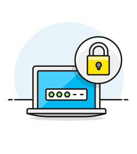
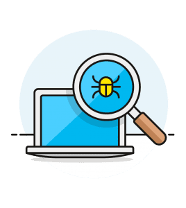
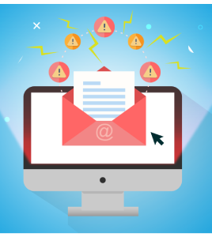

a
Consejos Generales de Seguridad
Utiliza un gestor de contraseñas
Los administradores de contraseñas son herramientas útiles para generar contraseñas nuevas, únicas y seguras para sitios y servicios, así como un método para almacenar las contraseñas de forma que no puedan ser accesibles a terceros. Un gestor de contraseñas debe ser parte del conjunto de herramientas que todo usuario debería considerar. Por favor, visita nuestro artículo sobre Contraseñas para obtener más información y recursos sobre el uso del gestor de contraseñas.

Protege tu navegador
Otra forma de evitar el malware es utilizar addons, plugins o extensiones de confianza en tu navegador para bloquear y tener avisos acerca de actividad insegura que pueda ser detectada. Para obtener una lista de addons/extensiones/plug-ins sugeridos, por favor visita nuestra sección de Privacidad.
Usa Antivirus
El uso de aplicaciones para detectar malware es una defensa eficaz contra los programas maliciosos que han sido modificados para realizar acciones no deseadas u obtener información de forma fraudulenta. Disponemos de más recursos e información acerca de cómo protegerse de las diversas amenazas de malware en dispositivos y sistemas operativos de todo tipo. Por favor, accede a nuestra sección de Malware para más información.

Proteja su información personal
No use ninguna parte de su número de Seguro Social (o cualquier otro tipo de información privada, como números de tarjetas de crédito o cumpleaños) como su contraseña, nombre de usuario o número de identificación personal (Personal Identification Number, o PIN). Si alguien consigue acceder a esta información, puede ser una de las primeras cosas que usen para intentar entrar a su cuenta.
Tenga cuidado con correos electrónicos sospechosos
No responda a correos electrónicos sospechosos que aseguren ser de su banco o de cualquier otra compañía en los que le soliciten los detalles de su cuenta. Ningún banco o agencia gubernamental se pondrá en contacto de esta manera para pedirle información personal. Darle un vistazo a la dirección de correo electrónico puede ayudarle a determinar su validez. Si el nombre de la empresa está mal escrito, o el correo electrónico proviene de un dominio público, es probable que no sea legítimo.
